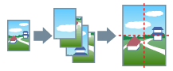

Данные для печати, представленные на одной странице, можно увеличить и распечатать на нескольких листах бумаги. Соединив листы бумаги с распечатанными данными, можно сформировать большой плакат.

1.
Откройте вкладку [Основные настройки] или [Макет страницы].
2.
Выберите [Разметка страницы] → [Плакат [1 x 2]]/[Плакат [N x N]] (N = 2, 3 или 4).
1 x 2 и N x N соответствуют числу листов бумаги, на которых будут распределены и распечатаны данные. Например, при выборе настройки [Плакат [2 x 2]] данные для печати распределяются на 4 страницы (2 по вертикали x 2 по горизонтали).
3.
При печати с линиями границы или вырезанными фрагментами/полями либо при печати только определенных страниц нажмите [Сведения о плакате].
Сведения о настройке [N на 1] приведены в разделе "
Уменьшенный макет."
Функции, недоступные в сочетании с данной функцией
Вкладка [Макет страницы] → [Ручная настройка масштаба]/[Фоновое изображение]/[Порядок распол. страниц]
Вкладка [Основные настройки] → [Ручная настройка масштаба]/[Порядок распол. страниц]
Вкладка [Настройки устройства] → [Буферизация на хост-компьютере] → [Отключена]
Порядок расположения выводимых страниц
В том случае, если параметр [Лицевой стороной вверх] установлен: с верхнего левого угла вправо
В том случае, если параметр [Лицевой стороной вниз] установлен: с нижнего правого угла влево
Справки
[Невозможно выбрать параметр Печать плаката], если установлена настройка [Двухсторонняя печать]. Более подробно о переключении между двухсторонней и односторонней печатью см. в разделе
Односторонняя и двухсторонняя печать.